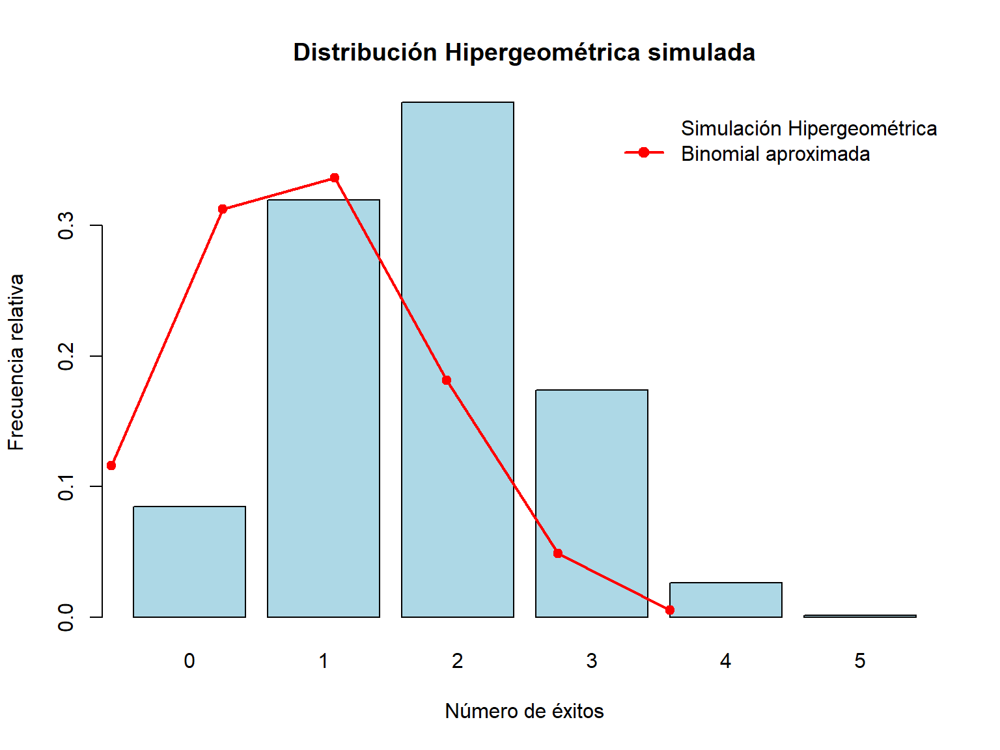

Código
# =======================================================
# CAPÍTULO: Distribución Hipergeométrica - R
# =======================================================
# --- 1. Parámetros de ejemplo ---
N <- 20 # Tamaño población
K <- 7 # Número de éxitos en población
n <- 5 # Tamaño muestra
cat("Parámetros:\n")Parámetros:Código
cat("N =", N, "K =", K, "n =", n, "\n\n")N = 20 K = 7 n = 5 Código
# =======================================================
# 2. Función de probabilidad (PMF)
# =======================================================
k <- 3 # Número de éxitos deseado
prob_k <- dhyper(k, K, N-K, n)
cat("Probabilidad de exactamente", k, "éxitos:", prob_k, "\n\n")Probabilidad de exactamente 3 éxitos: 0.1760836 Código
# =======================================================
# 3. Probabilidades acumuladas
# =======================================================
# P(X <= k)
prob_menor_igual <- phyper(k, K, N-K, n)
cat("Probabilidad de X <=", k, ":", prob_menor_igual, "\n")Probabilidad de X <= 3 : 0.9692982 Código
# P(X >= k) = 1 - P(X <= k-1)
prob_mayor_igual <- 1 - phyper(k-1, K, N-K, n)
cat("Probabilidad de X >=", k, ":", prob_mayor_igual, "\n\n")Probabilidad de X >= 3 : 0.2067853 Código
# =======================================================
# 4. Media y varianza
# =======================================================
mu <- n * K / N
varianza <- n * K / N * (N-K)/N * (N-n)/(N-1)
sigma <- sqrt(varianza)
cat("Media:", mu, "Varianza:", varianza, "Desviación estándar:", sigma, "\n\n")Media: 1.75 Varianza: 0.8980263 Desviación estándar: 0.9476425 Código
# =======================================================
# 5. Simulación
# =======================================================
set.seed(123)
n_sim <- 10000
sim <- rhyper(n_sim, K, N-K, n)
# Frecuencias empíricas
freq_emp <- table(sim)/n_sim
cat("Frecuencias empíricas de la simulación:\n")Frecuencias empíricas de la simulación:Código
print(freq_emp)sim
0 1 2 3 4 5
0.0846 0.3193 0.3943 0.1738 0.0265 0.0015 Código
# Histograma de simulación
barplot(freq_emp, col="lightblue", main="Distribución Hipergeométrica simulada",
xlab="Número de éxitos", ylab="Frecuencia relativa")
# =======================================================
# 6. Comparación con Binomial aproximada
# =======================================================
p_bin <- K / N
pmf_binom <- dbinom(0:n, n, p_bin)
# Superponer binomial
points(0:n, pmf_binom, col="red", pch=19)
lines(0:n, pmf_binom, col="red", lwd=2)
legend("topright", legend=c("Simulación Hipergeométrica","Binomial aproximada"),
col=c("lightblue","red"), lwd=c(NA,2), pch=c(NA,19), bty="n")
Código
# =======================================================
# 7. Ejemplo avanzado: productos defectuosos
# =======================================================
N2 <- 50 # tamaño lote
K2 <- 10 # defectuosos
n2 <- 8 # inspeccionados
# Probabilidad de exactamente 2 defectuosos
prob2 <- dhyper(2, K2, N2-K2, n2)
# Media y desviación estándar
mu2 <- n2*K2/N2
sigma2 <- sqrt(n2*K2/N2 * (N2-K2)/N2 * (N2-n2)/(N2-1))
cat("\nEjemplo: Productos defectuosos\n")
Ejemplo: Productos defectuososCódigo
cat("Probabilidad de exactamente 2 defectuosos:", prob2, "\n")Probabilidad de exactamente 2 defectuosos: 0.3217247 Código
cat("Media:", mu2, "Desviación estándar:", sigma2, "\n")Media: 1.6 Desviación estándar: 1.047446